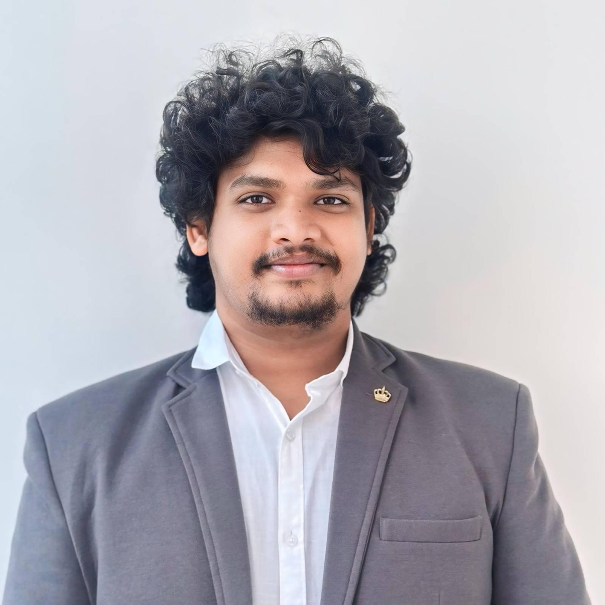
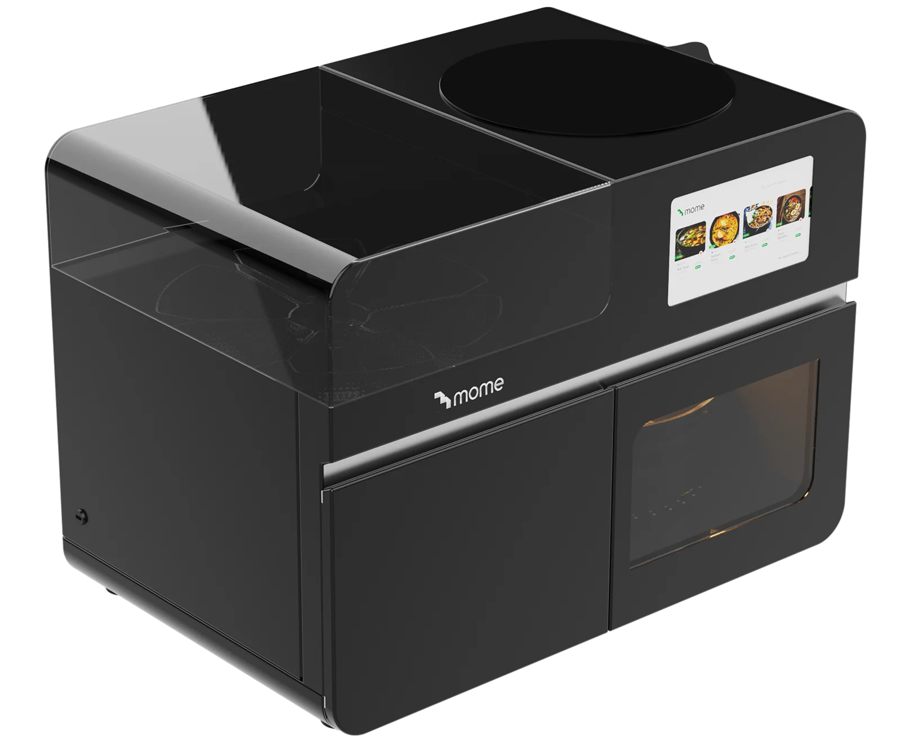
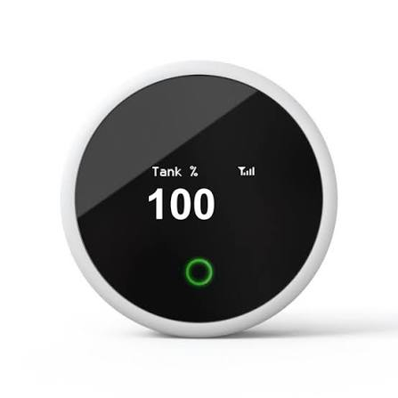
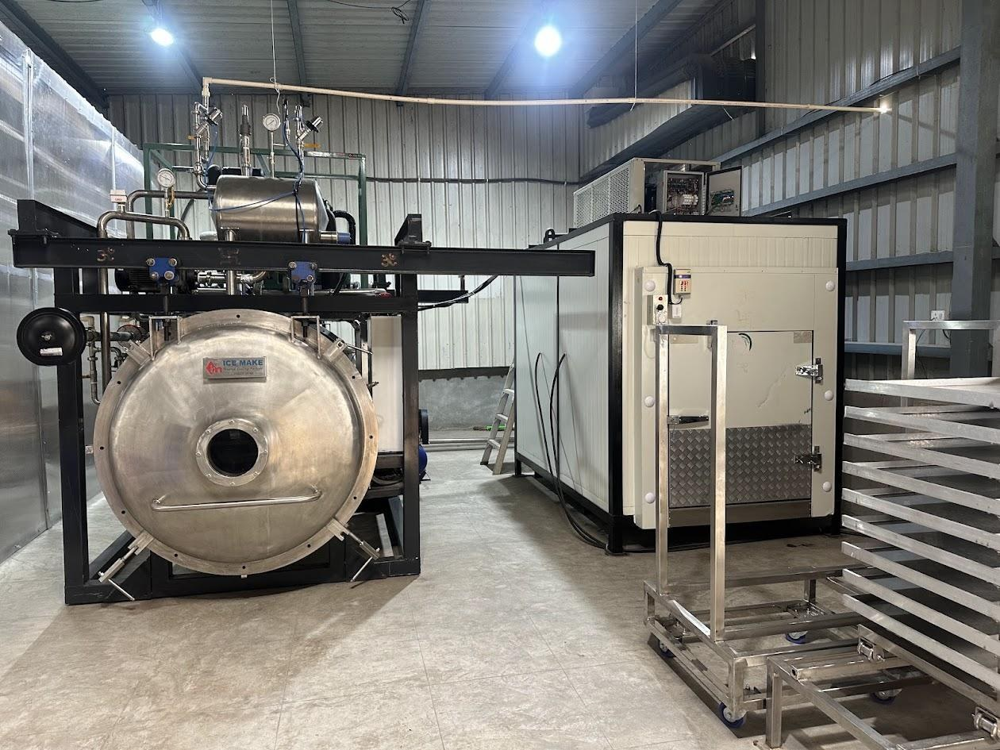
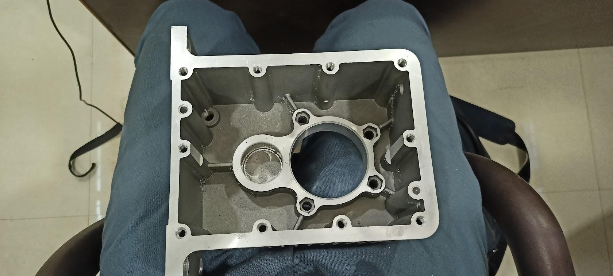
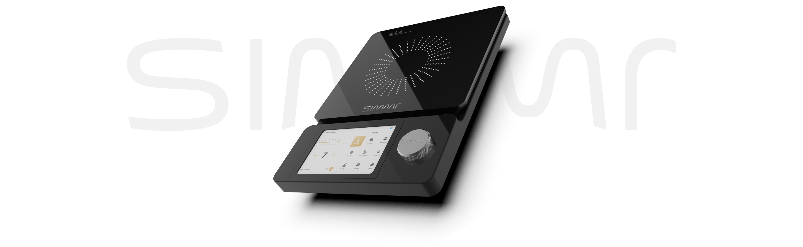
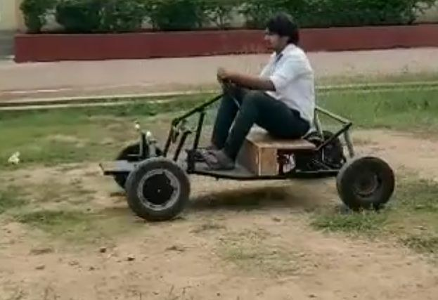
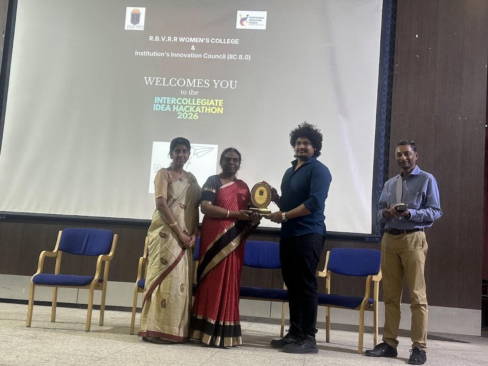
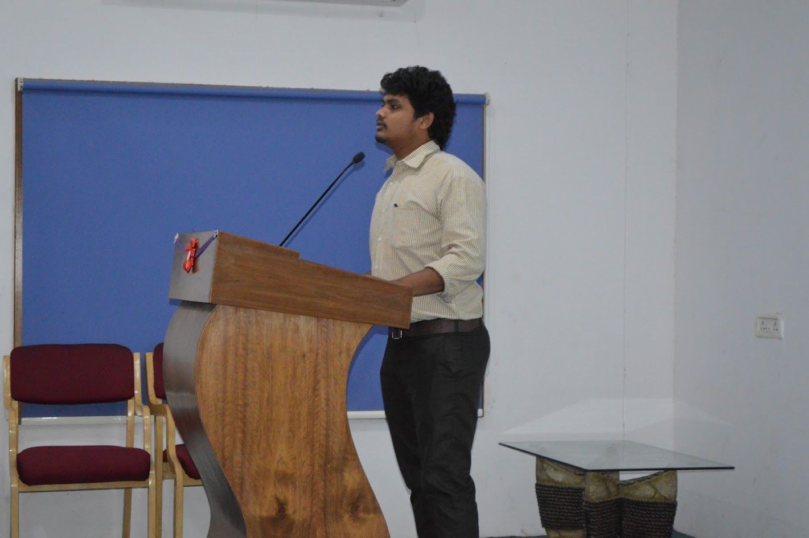
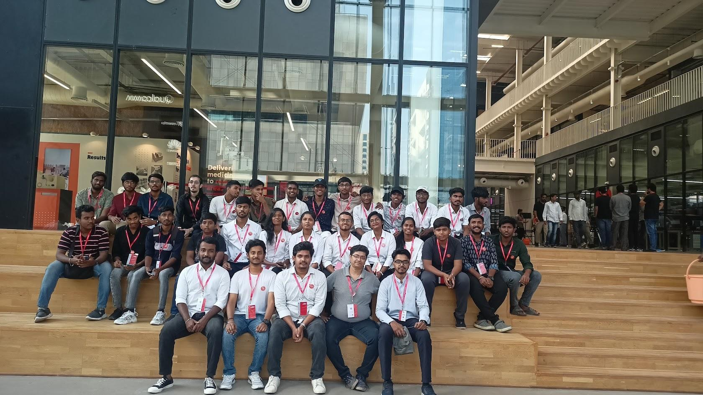

Product strategy, roadmaps, customer-centric development, requirements, product lifecycle management and cross-functional team leadership.
- 0→1 development
- Agile
- Stakeholders
- Product lifecycle
Product · Engineering · Innovation
Product ManagerProduct & Innovation Engineer
From problem to product. I’m a Product Manager at Keystone Robotix and Product & Innovation Engineer with 8 years of product-development experience. I bring design thinking and engineering together to turn opportunities into working products, from user needs and product strategy through prototyping, integration, validation and manufacturing readiness.

Product Manager · Product Builder
A connected skill set for shaping, building and launching physical and smart products.
Product strategy, roadmaps, customer-centric development, requirements, product lifecycle management and cross-functional team leadership.
Concept-to-production mechanical and electromechanical design, system architecture, CAD, design verification, tolerance and BOM optimization.
Rapid prototype development, iterative testing, risk analysis and product validation for complex integrated systems.
Robotic mechanisms and electromechanical systems integrating mechanical, electrical and embedded engineering.
Connected hardware, embedded control and smart monitoring across sensors, actuators and wireless networks.
Manufacturing coordination, vendor management, technical documentation, cost and BOM optimization, and transition from prototype to production.
Selected work
Product and project examples featured in my profile. Open each product site to learn more.

AI · Robotics · Consumer
Automatic food-cooking machine and robot product work across MoMe and Buchuk. My profile records related patent work for Buchuk and end-to-end development toward manufacturing readiness.
Explore MoMe ↗
IoT · Water management
Water-level management and water-quality analysis concept, supported by a connected smart monitoring device.
Explore Neerovel ↗
NeoGreens · Growing systems
Plant setup and machinery maintenance, along with a Smart Rack for microgreens and a humidity-and-temperature control device.
Visit NeoGreens ↗Robotics · Automation
6-axis robotic arm, agriculture rover, smart dispensing and automated cooking systems, spanning mechanisms, controls and integration.
Cloud · Recipes
Cloud platform for recipes, bringing cooking content and recipe discovery into one connected experience.
Visit Qzene ↗
Mechanical design · Aquaculture
Designed an aquaculture gearbox for Barathi Aqua, translating an application need into a mechanical product design.

Semi-automatic cooking · Guided recipes
Semi-automatic cooking guide appliance designed to help bring guided cooking into the home.
Visit Simmr ↗Process
An end-to-end path that connects user needs to manufacturing readiness.
Experience
Product management and engineering across robotics, consumer products and electromechanical systems.
Apr 2026 — Present CURRENT
Keystone Robotix · Hyderabad, India
Product strategy and roadmaps, end-to-end product development, cross-functional leadership, robotics and hardware systems.
Aug 2024 — Apr 2026
Keystone Robotix · Hyderabad, India
Led development of MoMe, an AI-powered automated cooking machine, from concept toward manufacturing readiness. Owned 0→1 development of an integrated electromechanical product, coordinated mechanical, electrical and embedded teams, accelerated prototype iterations, and conducted DFMEA and system validation.
Sep 2024 — Present CURRENT
NeoGreens · Hyderabad, India
Product management experience in a connected growing-systems and microgreens context.
May 2019 — Sep 2024
Quanint Techsoft Pvt. Ltd. · Hyderabad, India
Progressed from product development into senior product design engineering, becoming a shareholder after six months. Led mechanical design from conceptual CAD through production-ready documentation, including design verification, FMEA, prototyping, BOMs and electromechanical assemblies.
May 2019 — Aug 2024
Buchuk · Part-time
Product design, product development and prototyping.
May — Jun 2018
3F Industries Ltd. · Tadepalligudem, India
Production line, power generation plant and manufacturing processes.
May — Jul 2017
South Central Railway · Vijayawada, India
Wheel shop exposure: non-destructive testing for wheels and axles, bearing inspection, technical drawing and manufacturing processes.
Education
Academic foundations, hands-on robotics and early product-building experience.
Postgraduate
BITS Pilani
Undergraduate
Sri Vasavi Engineering College
Robotics · Leadership
First-batch member of the e-Yantra robotics lab; trained three robotics batches and served as student coordinator for the technical fest.

Early builds
Drone, fixed-wing airplane and electric go-kart; semi-trailer rear-wheel steering; smart-farm watering, paddy sowing and reptile-deterrent projects. Internship exposure at South Central Railway and FFF Industries.
Community
Sharing product and engineering experience with startups, students and partner teams.
Startup mentorship
Mentored six startups, including Techredi, Ecoemigoes, Agronoid and Intellibots, plus student startups at Geethanjali and RBVRR colleges. Served as a technical mentor at RBVRR, a panel member for Geethanjali startup events, and a jury member for an Idea Hackathon.

Education · Outreach
Delivered guest lectures at Sreenidhi, St. Peter’s, Geethanjali, Vardhaman, Sri Vasavi Degree and Engineering colleges; collaborated with Karo Sambhav for college lectures.

Product consulting
Consulting engagements included six months at T-Works, along with product work for Deeploop Technologies and IntelliBot.

Product Manager / Product & Innovation Engineer with 8 years of experience spanning product strategy, end-to-end electromechanical product development and manufacturing-focused design. A multidisciplinary product builder who can identify a problem, define the product, architect the system, prototype rapidly, integrate hardware and software, validate performance and move toward production.
Let’s build something useful
Have a product challenge, collaboration idea or opportunity? Send me a note or connect on LinkedIn.
Use the linked form to send your name, email, address, phone number (optional), and comments. Responses are collected in the Google Form.
Open contact form ↗Google sign-in is required by the form owner to submit a response.